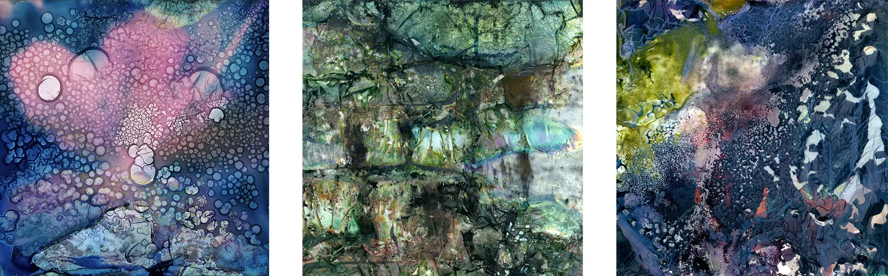

Until May 6th, these three Warped Topography images are being exhibited at the Patchings Gallery in Nottingham as part of the #Connected2018 exhibition.

Each is available as a framed print for £95, of which £50 will be donated to Young Minds the #Connected2018 suggested charity.
If you would like to buy one please contact me.
You can also visit the Connected Exhibition Charity Auction site and bid on a huge number of items and it all for a great cause!
| « next | » previous |